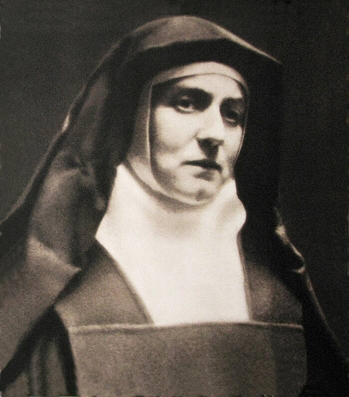

Leaving the question open
On the main page we said: leave the big questions open for now, and just come and see. Here is a little more about that idea. If philosophy isn't your thing, skip this page. It isn't required for anything.
Setting a question to one side
Philosophers have a name for this: bracketing. It comes from a way of thinking called phenomenology, started by the German philosopher Edmund Husserl a little over a hundred years ago. The idea is simple. Before you decide what something “really” is, you first look carefully at how it actually shows up in your experience. For a while, you put your theories in brackets, like a side note in a sentence.
Think of music. You don't need a theory of sound waves to notice that a melody is sad. You just listen, and notice.
Prayer can be approached the same way. For one hour, set aside the question “Is anyone really listening?” Don't answer yes, and don't answer no. Just pay attention to what happens when you sing these words.
Bracketing isn't pretending to believe. It isn't throwing away your doubts either. It's setting them to one side long enough to look.
A philosopher who kept looking

.jpg){kind=link}
Edith Stein was one of Husserl's best students and, for a time, his assistant. She was born in 1891 into a devout Jewish family in what is now Wrocław, Poland. As a teenager she stopped praying and gave up her faith. She became a brilliant, careful philosopher.Check: Britannica says she renounced her faith in 1904 and became an atheist; Wikipedia says agnostic
In the summer of 1921, staying at a friend's house, she picked up the life story of Saint Teresa of Ávila, written by Teresa herself. She read it all night.Checked: Vatican biography for her canonization, 1998 On January 1, 1922, she was baptized. Later she became a Carmelite nun, taking the name Sister Teresa Benedicta of the Cross. In 1942 the Nazis killed her at Auschwitz. In 1998, Pope John Paul II declared her a saint.
She never stopped being a careful thinker. She simply kept looking, honestly, until she saw.
Not a blind leap
You might think faith means switching your mind off. The Catholic Church doesn't think so. Her Catechism says that the act of faith is “by no means a blind impulse of the mind.”Checked: CCC 156, vatican.va You are welcome to bring every question you have. You're also welcome to set them down for an hour and listen.